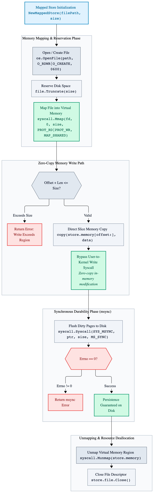
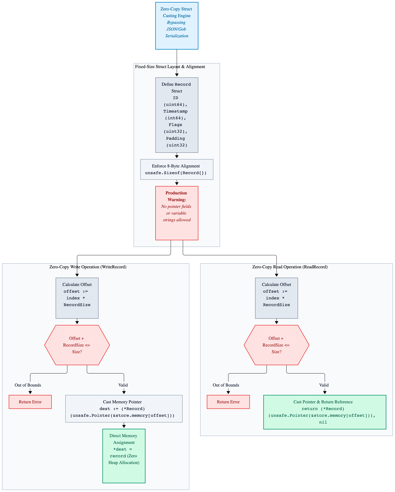
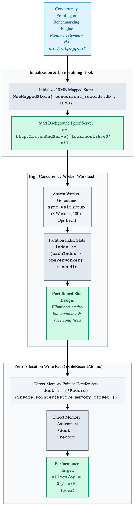

State Persistence & Performance
Welcome to Chapter 9 of the Go Systems Blueprint. Building upon the low-level IPC and socket patterns examined in Chapter 8, reliable state persistence and runtime profiling eliminate syscall overhead, GC churn, and concurrency bottlenecks.
This chapter covers memory-mapped file persistence (mmap and msync), zero-copy struct casting,
and live runtime diagnostics via net/http/pprof under high-concurrency workloads.
9.1 Zero-Copy State Persistence via Memory-Mapped File (mmap)
Memory-mapped files bridge virtual memory and disk storage, allowing a process to read and write file contents
directly through memory pointers. Modifying mapped memory lets the kernel manage paging while explicit
msync calls flush dirty pages to disk when durability is required.
package main
import (
"errors"
"fmt"
"os"
"syscall"
"unsafe"
)
// MappedStore represents a zero-copy memory-mapped file persistence region.
type MappedStore struct {
file *os.File
memory []byte
size int64
}
// NewMappedStore opens or creates a file of the specified size and memory-maps it into process address space.
func NewMappedStore(storeFilePath string, storeSize int64) (*MappedStore, error) {
// Defensively check that the store file path is not empty.
if storeFilePath == "" {
return nil, errors.New("error: store file path cannot be empty")
}
// Defensively check that the mapped byte size is positive.
if storeSize <= 0 {
return nil, errors.New("error: store size must be greater than zero")
}
// Defensively check that the requested size fits safely within int for syscall.Mmap.
if storeSize > int64(^uint(0)>>1) {
return nil, errors.New("error: store size exceeds maximum addressable buffer length")
}
storeFile, openError := os.OpenFile(storeFilePath, os.O_RDWR|os.O_CREATE|os.O_TRUNC, 0600)
if openError != nil {
return nil, fmt.Errorf("failed to open store file %s: %w", storeFilePath, openError)
}
// Reserve exact backing storage capacity before mapping into virtual address space.
if truncateError := storeFile.Truncate(storeSize); truncateError != nil {
_ = storeFile.Close()
return nil, fmt.Errorf("failed to truncate store file %s: %w", storeFilePath, truncateError)
}
mappedBytes, mmapError := syscall.Mmap(
int(storeFile.Fd()),
0,
int(storeSize),
syscall.PROT_READ|syscall.PROT_WRITE,
syscall.MAP_SHARED,
)
if mmapError != nil {
_ = storeFile.Close()
return nil, fmt.Errorf("failed to memory-map store file %s: %w", storeFilePath, mmapError)
}
return &MappedStore{
file: storeFile,
memory: mappedBytes,
size: storeSize,
}, nil
}
// WriteAt copies data directly into the memory-mapped byte slice at the given offset.
func (store *MappedStore) WriteAt(payload []byte, writeOffset int64) error {
// Defensively guard against a nil store or uninitialized mapping.
if store == nil || len(store.memory) == 0 {
return errors.New("error: mapped store is not initialized")
}
// Defensively reject negative offsets.
if writeOffset < 0 {
return errors.New("error: write offset cannot be negative")
}
payloadLength := int64(len(payload))
if payloadLength == 0 {
return nil
}
// Defensively prevent out-of-bounds writes past the mapped region.
if writeOffset > store.size || payloadLength > store.size-writeOffset {
return errors.New("error: write exceeds mapped region size")
}
copy(store.memory[writeOffset:], payload)
return nil
}
// Sync flushes dirty memory pages back to disk storage synchronously.
func (store *MappedStore) Sync() error {
// Defensively guard against a nil store or uninitialized mapping.
if store == nil || len(store.memory) == 0 {
return errors.New("error: mapped store is not initialized")
}
_, _, msyncErrno := syscall.Syscall(
syscall.SYS_MSYNC,
uintptr(unsafe.Pointer(&store.memory[0])),
uintptr(store.size),
uintptr(syscall.MS_SYNC),
)
if msyncErrno != 0 {
return fmt.Errorf("msync failed with errno: %d", msyncErrno)
}
return nil
}
// Close unmaps the virtual memory region and closes the underlying file descriptor.
func (store *MappedStore) Close() error {
// Defensively guard against closing a nil store.
if store == nil {
return errors.New("error: mapped store cannot be nil")
}
var combinedErrors []error
if len(store.memory) > 0 {
if munmapError := syscall.Munmap(store.memory); munmapError != nil {
combinedErrors = append(combinedErrors, fmt.Errorf("failed to unmap memory: %w", munmapError))
}
store.memory = nil
}
if store.file != nil {
if closeError := store.file.Close(); closeError != nil {
combinedErrors = append(combinedErrors, fmt.Errorf("failed to close store file: %w", closeError))
}
store.file = nil
}
return errors.Join(combinedErrors...)
}Figure 9.1: Memory-Mapped File Architecture

9.2 Zero-Copy Struct Casting via Unsafe Pointers
Because MappedStore provides a contiguous mapped byte region, fixed-width value structs can be read
and written directly without serialization allocations. Keep records strictly pointer-free with explicit alignment padding.
Production Warning
Zero-copy struct casting requires fixed-width primitive fields, explicit alignment padding, and consistent host endianness. Never include pointers, strings, or slices inside a struct cast directly from mapped memory.
package main
import (
"errors"
"fmt"
"unsafe"
)
// LogRecord represents a fixed-size transactional entry suitable for zero-copy memory mapping.
type LogRecord struct {
RecordID uint64
Timestamp int64
Flags uint32
// Explicit padding keeps struct size aligned to 8 bytes.
_ uint32
}
const logRecordByteSize = int64(unsafe.Sizeof(LogRecord{}))
// ReadRecord performs zero-copy retrieval of a LogRecord at the given slot index.
func (store *MappedStore) ReadRecord(slotIndex int64) (*LogRecord, error) {
// Defensively guard against a nil store or uninitialized mapping.
if store == nil || len(store.memory) == 0 {
return nil, errors.New("error: mapped store is not initialized")
}
// Defensively reject negative slot indices.
if slotIndex < 0 {
return nil, errors.New("error: record slot index cannot be negative")
}
byteOffset := slotIndex * logRecordByteSize
if byteOffset < 0 || byteOffset > store.size || logRecordByteSize > store.size-byteOffset {
return nil, errors.New("error: read offset out of bounds")
}
return (*LogRecord)(unsafe.Pointer(&store.memory[byteOffset])), nil
}
// WriteRecord writes a LogRecord directly into the mapped memory slot at slotIndex.
func (store *MappedStore) WriteRecord(slotIndex int64, entry LogRecord) error {
// Defensively guard against a nil store or uninitialized mapping.
if store == nil || len(store.memory) == 0 {
return errors.New("error: mapped store is not initialized")
}
// Defensively reject negative slot indices.
if slotIndex < 0 {
return errors.New("error: record slot index cannot be negative")
}
byteOffset := slotIndex * logRecordByteSize
if byteOffset < 0 || byteOffset > store.size || logRecordByteSize > store.size-byteOffset {
return errors.New("error: write offset out of bounds")
}
targetSlot := (*LogRecord)(unsafe.Pointer(&store.memory[byteOffset]))
*targetSlot = entry
return nil
}Figure 9.2: Zero-Copy Memory Mapping Architecture

9.3 Runtime Profiling and Concurrency Diagnostics (pprof)
Concurrent writes into shared mapped memory must partition disjoint slots per worker to avoid data races while
exposing net/http/pprof on a dedicated internal loop to inspect CPU, heap, and goroutine profiles live.
package main
import (
"context"
"errors"
"fmt"
"log"
"net"
"net/http"
_ "net/http/pprof"
"runtime"
"sync"
"sync/atomic"
"time"
)
// WorkloadTelemetry captures runtime metrics and profiling configuration for a concurrent store run.
type WorkloadTelemetry struct {
CompletedRecordWrites int64
ElapsedDuration time.Duration
RecordsPerSecond float64
}
// ConfigureRuntimeProfiling enables mutex and block contention sampling for live pprof inspection.
func ConfigureRuntimeProfiling(mutexProfileFraction int, blockProfileRateNanoseconds int) error {
// Defensively reject negative sampling fractions for mutex profiling.
if mutexProfileFraction < 0 {
return errors.New("error: mutex profile fraction cannot be negative")
}
// Defensively reject negative block profiling intervals.
if blockProfileRateNanoseconds < 0 {
return errors.New("error: block profile rate cannot be negative")
}
// Setting a positive fraction records every 1/Nth mutex contention event in pprof mutex profiles.
runtime.SetMutexProfileFraction(mutexProfileFraction)
// Setting a positive rate records goroutine blocking events exceeding the threshold in nanoseconds.
runtime.SetBlockProfileRate(blockProfileRateNanoseconds)
return nil
}
// RunConcurrentStoreWorkload executes partitioned zero-copy writes while serving live pprof endpoints.
func RunConcurrentStoreWorkload(
workloadContext context.Context,
mappedStore *MappedStore,
diagnosticListenAddress string,
workerGoroutineCount int,
recordsPerWorker int64,
) (WorkloadTelemetry, error) {
// Defensively validate that the workload context is not nil.
if workloadContext == nil {
return WorkloadTelemetry{}, errors.New("error: workload context cannot be nil")
}
// Defensively validate that the memory-mapped store and its buffer are initialized.
if mappedStore == nil || len(mappedStore.memory) == 0 {
return WorkloadTelemetry{}, errors.New("error: mapped store is nil or uninitialized")
}
// Defensively validate that the diagnostic HTTP bind address is non-empty.
if diagnosticListenAddress == "" {
return WorkloadTelemetry{}, errors.New("error: diagnostic listen address cannot be empty")
}
// Defensively validate positive worker count and per-worker operation count.
if workerGoroutineCount <= 0 {
return WorkloadTelemetry{}, errors.New("error: worker goroutine count must be greater than zero")
}
if recordsPerWorker <= 0 {
return WorkloadTelemetry{}, errors.New("error: records per worker must be greater than zero")
}
// Defensively guard against integer overflow when computing total required slots.
if workerGoroutineCount > int((^uint64(0)>>1)/uint64(recordsPerWorker)) {
return WorkloadTelemetry{}, errors.New("error: total partitioned record slots overflow int64 capacity")
}
totalRequiredSlots := int64(workerGoroutineCount) * recordsPerWorker
totalRequiredBytes := totalRequiredSlots * logRecordByteSize
if totalRequiredBytes < 0 || totalRequiredBytes > mappedStore.size {
return WorkloadTelemetry{}, fmt.Errorf(
"error: partitioned workload requires %d bytes, exceeding mapped store size of %d bytes",
totalRequiredBytes,
mappedStore.size,
)
}
// Enable contention profiling so CPU, heap, goroutine, mutex, and block profiles are available live.
if profileConfigError := ConfigureRuntimeProfiling(1, 1000); profileConfigError != nil {
return WorkloadTelemetry{}, fmt.Errorf("failed to configure runtime profiling: %w", profileConfigError)
}
defer func() {
// Restore contention profiling rates to zero on exit to avoid ongoing overhead in host processes.
runtime.SetMutexProfileFraction(0)
runtime.SetBlockProfileRate(0)
}()
// Bind the TCP listener explicitly before spawning the server goroutine so readiness is deterministic.
diagnosticListener, listenError := net.Listen("tcp", diagnosticListenAddress)
if listenError != nil {
return WorkloadTelemetry{}, fmt.Errorf("failed to bind pprof listener on %s: %w", diagnosticListenAddress, listenError)
}
diagnosticHttpServer := &http.Server{
Handler: http.DefaultServeMux,
ReadHeaderTimeout: 5 * time.Second,
ReadTimeout: 10 * time.Second,
WriteTimeout: 30 * time.Second,
IdleTimeout: 60 * time.Second,
}
diagnosticServerErrorChannel := make(chan error, 1)
// Schedule graceful shutdown of the pprof server when the workload context is canceled.
cancelDiagnosticWatcher := context.AfterFunc(workloadContext, func() {
diagnosticShutdownContext, cancelDiagnosticShutdown := context.WithTimeout(context.Background(), 3*time.Second)
defer cancelDiagnosticShutdown()
if shutdownError := diagnosticHttpServer.Shutdown(diagnosticShutdownContext); shutdownError != nil && !errors.Is(shutdownError, http.ErrServerClosed) {
log.Printf("pprof server shutdown warning: %v\n", shutdownError)
}
})
defer cancelDiagnosticWatcher()
go func() {
log.Printf("pprof diagnostics listening on http://%s/debug/pprof/\n", diagnosticListener.Addr().String())
if serveError := diagnosticHttpServer.Serve(diagnosticListener); serveError != nil && !errors.Is(serveError, http.ErrServerClosed) {
diagnosticServerErrorChannel <- fmt.Errorf("pprof diagnostic server failed: %w", serveError)
}
close(diagnosticServerErrorChannel)
}()
var workerWaitGroup sync.WaitGroup
var completedWriteCounter atomic.Int64
workerFailureChannel := make(chan error, workerGoroutineCount)
workloadStartTime := time.Now()
const baseEpochSeconds int64 = 1718712300
// Partition disjoint record index ranges across workers to eliminate concurrent writes to the same slot.
for workerOrdinal := 0; workerOrdinal < workerGoroutineCount; workerOrdinal++ {
workerWaitGroup.Add(1)
partitionStartSlot := int64(workerOrdinal) * recordsPerWorker
go func(assignedSlot int64) {
defer workerWaitGroup.Done()
for recordSlotOffset := int64(0); recordSlotOffset < recordsPerWorker; recordSlotOffset++ {
if workloadContext.Err() != nil {
return
}
targetRecordSlot := assignedSlot + recordSlotOffset
recordEntry := LogRecord{
RecordID: uint64(targetRecordSlot),
Timestamp: baseEpochSeconds + targetRecordSlot,
Flags: 1,
}
if writeFailureError := mappedStore.WriteRecord(targetRecordSlot, recordEntry); writeFailureError != nil {
select {
case workerFailureChannel <- fmt.Errorf("worker slot %d write error: %w", targetRecordSlot, writeFailureError):
default:
}
return
}
completedWriteCounter.Add(1)
}
}(partitionStartSlot)
}
workerWaitGroup.Wait()
close(workerFailureChannel)
for workerFailure := range workerFailureChannel {
if workerFailure != nil {
return WorkloadTelemetry{}, workerFailure
}
}
// Surface any fatal error emitted by the background pprof HTTP listener.
select {
case serverFailure, channelOpen := <-diagnosticServerErrorChannel:
if channelOpen && serverFailure != nil {
return WorkloadTelemetry{}, serverFailure
}
default:
}
// Flush written pages to backing storage once all partitioned worker goroutines complete.
if finalSyncError := mappedStore.Sync(); finalSyncError != nil {
return WorkloadTelemetry{}, fmt.Errorf("failed to sync mapped store after concurrent workload: %w", finalSyncError)
}
elapsedTime := time.Since(workloadStartTime)
totalCompletedWrites := completedWriteCounter.Load()
var throughputPerSecond float64
if elapsedTime.Seconds() > 0 {
throughputPerSecond = float64(totalCompletedWrites) / elapsedTime.Seconds()
}
return WorkloadTelemetry{
CompletedRecordWrites: totalCompletedWrites,
ElapsedDuration: elapsedTime,
RecordsPerSecond: throughputPerSecond,
}, nil
}Figure 9.3: Zero-Copy Concurrency Profiling Architecture

Key Takeaways
-
Memory-Mapped Files (
mmap): Bridge virtual memory and storage to eliminate explicitread()andwrite()syscall overhead for high-speed append-only logs and caches. - Zero-Copy Struct Casting: Cast byte slices directly into fixed-size pointer-free Go structs with explicit alignment padding to avoid allocation churn.
-
Kernel Durability (
msync): Explicitly flush dirty memory pages to disk storage usingsyscall.Syscall(syscall.SYS_MSYNC, ...)when crash durability is required. -
Runtime Profiling (
pprof): Servenet/http/pprofon a controlled HTTP server with proper timeouts and shutdown hooks to diagnose CPU, allocation, and goroutine behavior under load.